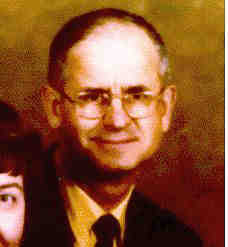

|
|
 Michael Joseph ELENCHIN (1925-1984) |
Michael Joseph ELENCHIN
• Census: 1930, 21 Apr 1930, St. Clair, Schuylkill, PA. 3 • Military Service: Army, 15 Feb 1944-11 Apr 1946. 4 41st Troop Carrier Squadron Michael married Marian Louise WEET, daughter of Herbert Peter WEET Sr. and Lydia McBeth ELDRIDGE. (Marian Louise WEET was born on 3 Mar 1929 in Pittsburgh, Allegheny, PA 5 6, baptized on 24 Mar 1929 in Resurrection, Pittsburgh, Allegheny, PA,5 died on 30 Aug 2000 in Philadelphia, Philadelphia, PA 7 and was buried in Sacred Heart Cemetery, Phoenixville, Chester, PA 2.) |
1 Social Security Administration, Death Master File (http://www.ancestry.com/search/rectype/vital/ssdi/main.htm).
2 Find A Grave, Inc, Find-A-Grave.com (http://www.findagerave.com).
3 Pennsylvania, Schuylkill County, 1930 U.S. Census, Population Schedule (Washington, D.C., National Archives and Records Administration), ED 54-186, Sheet 17, Line 10.
4 Pennsylvania Historical and Museum Commission, Bureau of Archives and History, Pennsylvania Veterans Burial Cards, 1929-1990; Series Number: Series 3 (Harrisburg, Pennsylvania).
5 Diocese of Pittsburgh, Baptismal Record Extract, Resurrection Church (Pittsburgh, PA, 9 Jul 1990), Vol. 2, Pg. 72.
6 Thomas Hoey, Oral Interview of Rosemary Weet Hoey (Pittsburgh, PA), 1997.
7 Thomas Hoey, Oral Interview of Rosemary Weet Hoey (Pittsburgh, PA), 30 Aug 2000.